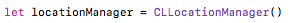
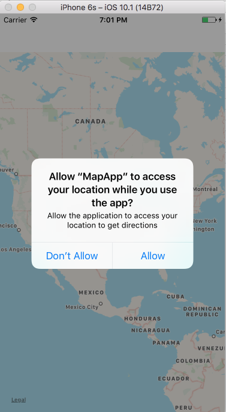
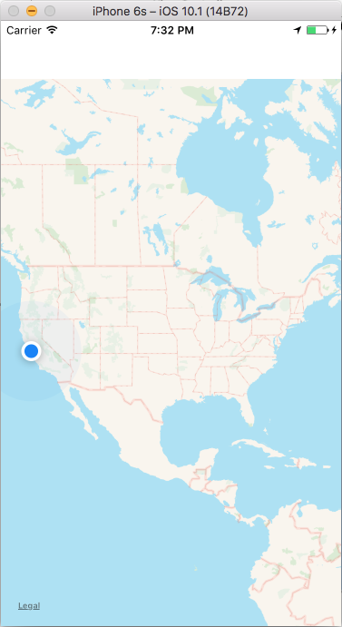

The next step is to get the users location. To do this, first, you need to create an instance of the CLLocationManager class and store a reference to it.
Place this code inside the ViewController class.
Then, you need to declare the class as implementing the MKMapViewDelegate protocol, which allows you to use a certain set of map related methods, and the CLLocationManagerDelegate, which allows you to manage the delivery of location related events to the application
Add MKMapViewDelegate and CLLocationManagerDelegate to the class declaration
We then need to indicate that the ViewController class is the delegate for both the mapView object and the locationManager. To do this add this code inside the viewDidLoad() function
The next step is to request permission from the user to access information about their current location. Put the following line inside the the viewDidLoad() function:
This line will ask the user to allow access to their location, but first, in order to get the request to appear to ther user, you need to update the Info.plist file. Open the file. Then to add to the apps Information Property List, hover over the Information Property List key and a + sign will appear. Click the + sign and a new line will be added to the Information Property List. Set the Key to Privacy - Location When In Use Usage Description, the Type to String, and the Value to the message you want to display to the user when the request is made
Now you can run the app and the request to access the user's location should pop up
Now that you have requested permission from the user to access their location you can display that location on the map
Return to the Main.storyboard/ViewController.swift view to add to the code
To display the current location add the folllowing code inside the viewDidLoad() function under the delegate expressions:
Explanation of this code:
if CLLocationManager.locationServicesEnabled() - anything inside this block will only be executed if the user allows the application to access their current location
mapView.showUserLocation = true - shows the users current location on the map view
Now run the app and the users current location will be marked.
